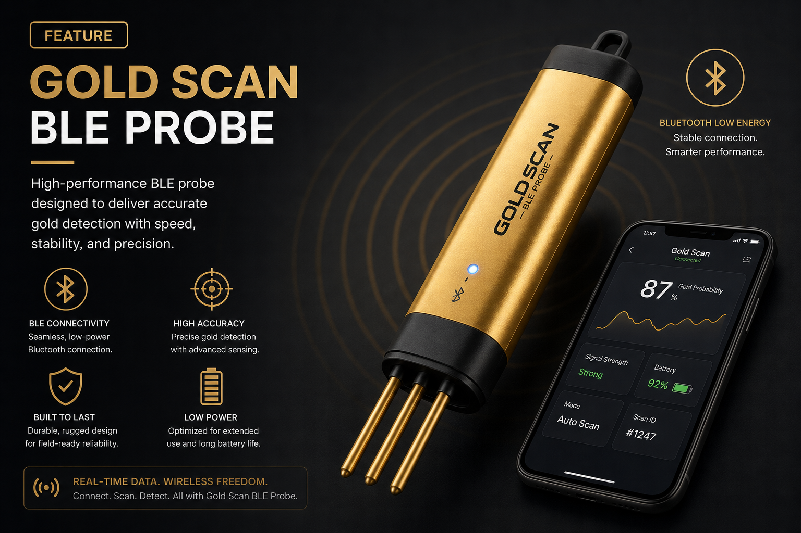
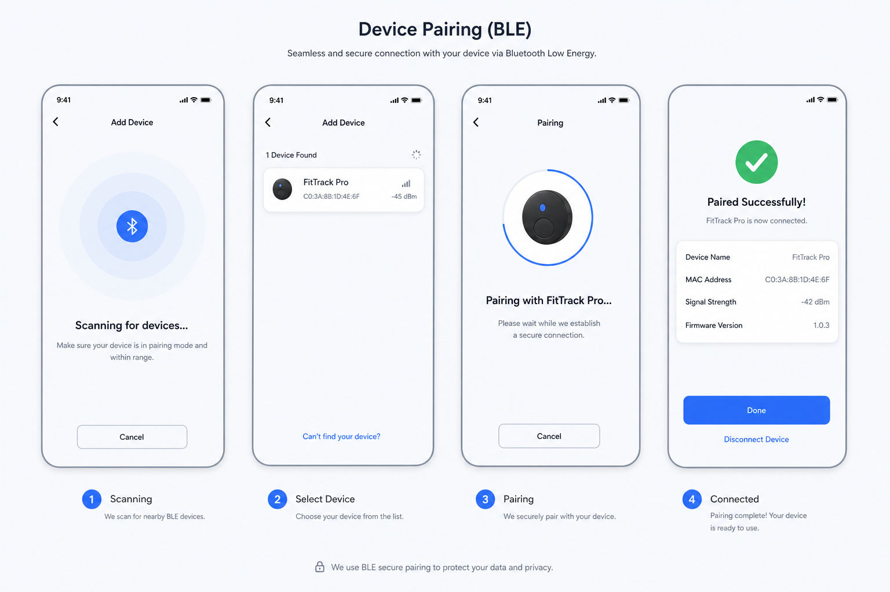
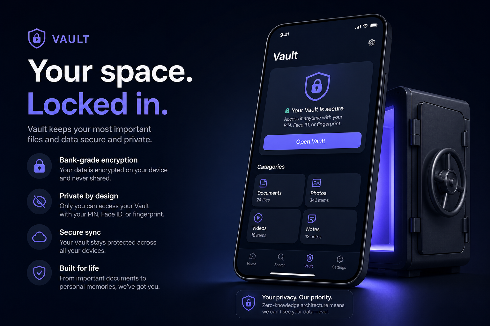
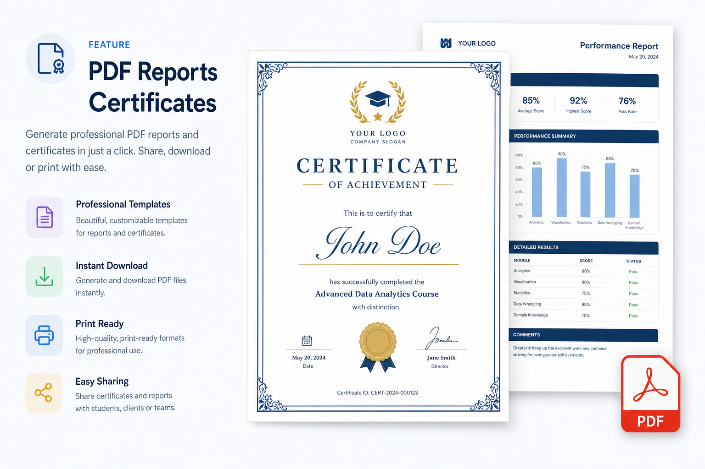
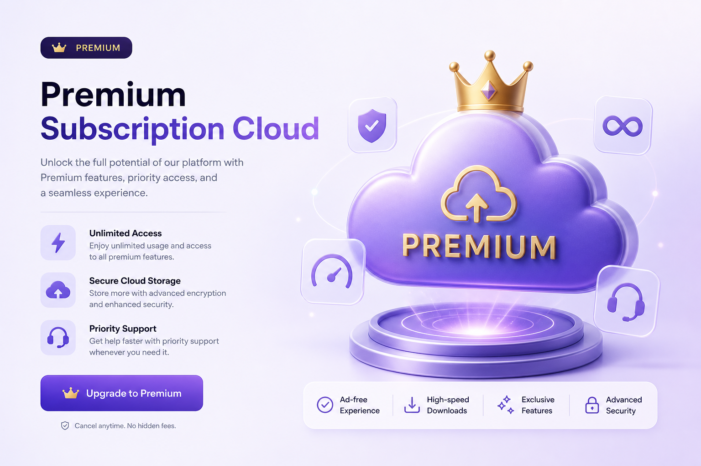

Connected precious-metal screening · iOS + BLE hardware
Estimate likely gold purity ranges at home with guided scans, vault history, and investor-ready reporting.
Confidential — for investor review · Screening estimates, not laboratory certification
WCS pairs a dedicated BLE probe with a premium iOS experience — hardware creates the signal; software creates the workflow, history, and monetization.
Guided checklist, live signal chart, fusion-based confidence scoring, and clear legal framing as screening estimates.


CoreBluetooth integration with command, telemetry, battery, firmware, and config characteristics.
Persistent scan history with purity, karat, confidence, and filters — the retention layer for subscription value.

PDF screening summaries via Supabase edge functions — disclaimers, device ID, calibration timestamp, share sheet export.


Hardware + subscription
Private TestFlight pilot with hardware BOM validation targeted post Supabase stand-up.
Defensible hardware signal · recurring app revenue · regulated claims language
Contact: WCS Precious Test · wcs.WCS-GoldTest
◆ Screening estimates only — not accredited laboratory certification